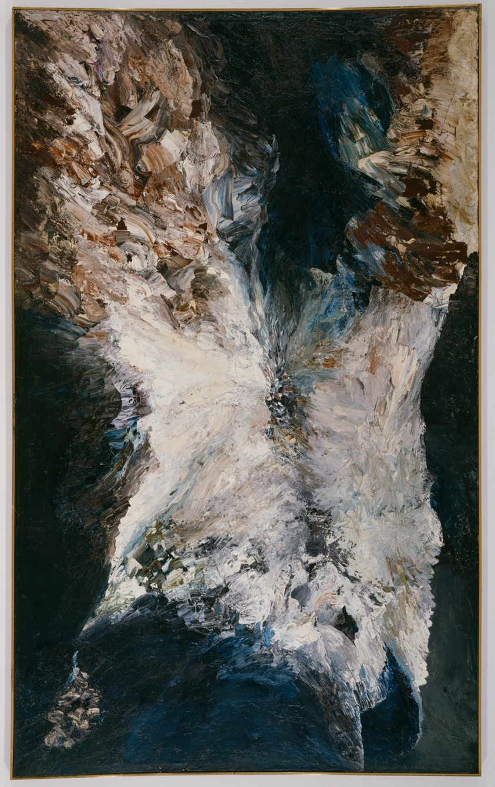

Jan 22, 2022
The Annunciation, Jay DeFeo
In Zero to One, Peter Thiel poses the question, "what important truth do very few people agree with you on?" Thiel calls a correct answer to the question a "secret" — a piece of unpopular/unconventional truth.
Secrets create superior returns in markets. Consensus longs are not great ideas. To be great, we must dare to differ. Secrets explain anomalies and break the efficient market theory.
From the book Capital Returns, I gather that Marathon's "secret" seems to be a deeper understanding of the capital cycle of industries, a sense of mean reversion implicit in the capitalist system. Nick Sleep talks about "scale economies shared" which he saw in Costco and Amazon's business model. Worm Capital talks about consumer products that "aggregates marginal gains," where improving slightly in many different areas results in a vastly superior product, loved by customers. They used differentiated frameworks to guide their investment process.
There seems to be great rewards for people who think different. I see it from college apps to dating apps, aren't we just commodity if we don't find a way to differentiate? Grouped by our cultural upbringing, our worldviews and paths are so often similar. What is the point if one can be so easily swapped for another? Does the romantic idea of "the one" break down in that case? What makes one special? What's the point of your existence?
"You're not special, there is bound to be many just like you." To those who hold that view, I say at least we should try to be.
T introduced me to trendy fashion. But what is fashion but a bunch of people wearing the same things, slightly different in their own ways. But really, "different but the same." It is only right because it is the popular opinion. I dislike that premise.
Therefore I made my new years resolution to escape cliché. Why "escape"? Because cliche pulls us toward it. We are pulled toward the default, the familiar. The security of the paths many have traversed naturally appeal to us.
What is the solution here? 1. By assigning priority to things that people around me are not doing. Hold a mental heuristic that there is intrinsic value in that. 2. By diversifying interests, try out more things given the extra time I have in my senior year. Get new hobbies. 3. Stop wasting time on useless websurfing and Tiktok. I should be engaged in work that I find meaningful and not resort to brainless dopamine hits.